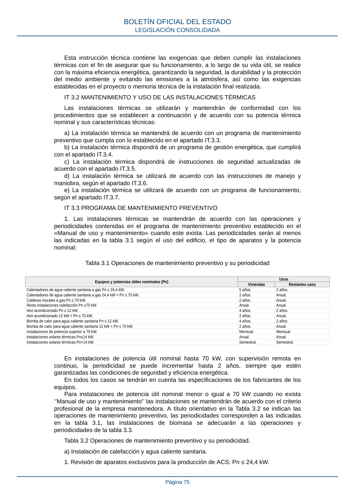

RITE · Página 75 · versión 2022-08-02
SHA256: ad1680c83bf4c7f5c656af1794c32ad0669ad9f36ac293737ff3f95177ff7b26 · página física 75 de 97 · métodos de encabezado
solo si están cotejados.
Formatos: Markdown · JSON de bloques · PDF p. 75 · imagen PNG
Esta instrucción técnica contiene las exigencias que deben cumplir las instalaciones térmicas con el fin de asegurar que su funcionamiento, a lo largo de su vida útil, se realice con la máxima eficiencia energética, garantizando la seguridad, la durabilidad y la protección del medio ambiente y evitando las emisiones a la atmósfera, así como las exigencias establecidas en el proyecto o memoria técnica de la instalación final realizada. IT 3.2 MANTENIMIENTO Y USO DE LAS INSTALACIONES TÉRMICAS Las instalaciones térmicas se utilizarán y mantendrán de conformidad con los procedimientos que se establecen a continuación y de acuerdo con su potencia térmica nominal y sus características técnicas: a) La instalación térmica se mantendrá de acuerdo con un programa de mantenimiento preventivo que cumpla con lo establecido en el apartado IT.3.3. b) La instalación térmica dispondrá de un programa de gestión energética, que cumplirá con el apartado IT.3.4. c) La instalación térmica dispondrá de instrucciones de seguridad actualizadas de acuerdo con el apartado IT.3.5. d) La instalación térmica se utilizará de acuerdo con las instrucciones de manejo y maniobra, según el apartado IT.3.6. e) La instalación térmica se utilizará de acuerdo con un programa de funcionamiento, según el apartado IT.3.7. IT 3.3 PROGRAMA DE MANTENIMIENTO PREVENTIVO 1. Las instalaciones térmicas se mantendrán de acuerdo con las operaciones y periodicidades contenidas en el programa de mantenimiento preventivo establecido en el «Manual de uso y mantenimiento» cuando este exista. Las periodicidades serán al menos las indicadas en la tabla 3.1 según el uso del edificio, el tipo de aparatos y la potencia nominal: Tabla 3.1 Operaciones de mantenimiento preventivo y su periodicidad Equipos y potencias útiles nominales (Pn) Usos Viviendas Restantes usos Calentadores de agua caliente sanitaria a gas Pn ≤ 24,4 kW. 5 años. 2 años. Calentadores de agua caliente sanitaria a gas 24,4 kW < Pn ≤ 70 kW. 2 años. Anual. Calderas murales a gas Pn ≤ 70 kW. 2 años. Anual. Resto instalaciones calefacción Pn ≥70 kW. Anual. Anual. Aire acondicionado Pn ≤ 12 kW. 4 años. 2 años. Aire acondicionado 12 kW < Pn ≤ 70 kW. 2 años. Anual. Bomba de calor para agua caliente sanitaria Pn ≤ 12 kW. 4 años. 2 años. Bomba de calor para agua caliente sanitaria 12 kW < Pn ≤ 70 kW. 2 años. Anual. Instalaciones de potencia superior a 70 kW. Mensual. Mensual. Instalaciones solares térmicas Pn≤14 kW. Anual. Anual. Instalaciones solares térmicas Pn>14 kW. Semestral. Semestral. En instalaciones de potencia útil nominal hasta 70 kW, con supervisión remota en continuo, la periodicidad se puede incrementar hasta 2 años, siempre que estén garantizadas las condiciones de seguridad y eficiencia energética. En todos los casos se tendrán en cuenta las especificaciones de los fabricantes de los equipos. Para instalaciones de potencia útil nominal menor o igual a 70 kW cuando no exista ‘’Manual de uso y mantenimiento’’ las instalaciones se mantendrán de acuerdo con el criterio profesional de la empresa mantenedora. A título orientativo en la Tabla 3.2 se indican las operaciones de mantenimiento preventivo, las periodicidades corresponden a las indicadas en la tabla 3.1, las instalaciones de biomasa se adecuarán a las operaciones y periodicidades de la tabla 3.3. Tabla 3.2 Operaciones de mantenimiento preventivo y su periodicidad. a) Instalación de calefacción y agua caliente sanitaria. 1. Revisión de aparatos exclusivos para la producción de ACS: Pn ≤ 24,4 kW. BOLETÍN OFICIAL DEL ESTADO LEGISLACIÓN CONSOLIDADA Página 75
